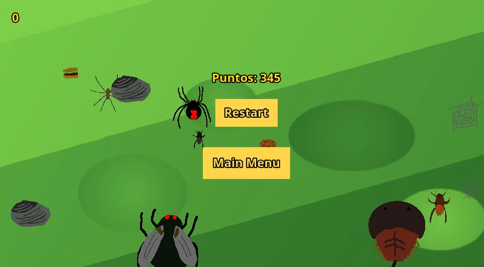

Juego de la cucaracha
Juego creado con JavaScript y con el framework de Phaser 3.
Es un juego hecho para mejorar mis conocimientos de programación mediante el uso de un framework para ayudarme a manejar las escenas y las colisiones entre los elementos del canvas.
El juego trata de una cucaracha que tiene que ir comiendo alimento para crecer y esquivar a los insectos más grandes que ella, a medida que va creciendo podrá comerse a otros personajes que van apareciendo por la pantalla.
